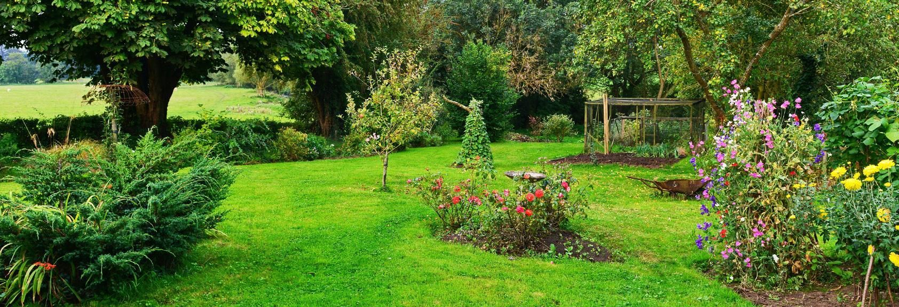

About Us
- At Spectrum Gardening Services, we take pride in transforming outdoor spaces into vibrant, thriving landscapes.
As a premier landscaping company, we bring a wealth of expertise and dedication to every project we understake.
- Founded on the principle of delivering excellence, Spectrum Gardening Services operates with a commitment to
quality, professionalism, and customer satisfaction. Our team consists of skilled contractors who are passionate
about creating beautiful outdoor environments that enhance the aesthetic appeal and functionallity of residential
and commercial properties alike.
- With a comprenhensive range of services, we cater to all aspects of landscaping needs. whether it's mulching,
lawn mowing, pest control, planting, or trimming/cutting trees, our team utilizes top-quality products and advanced
techniques to ensure superior results. We understand that every landscape is unique, which is why we tailor our
services to meet the specific requirements and preferences of each client.
- At Spectrum Gardening Services, we prioritize sustainability and environmental responsibility in all our endeavors.
From utilizing eco-friendly practices to offering organic alternatives, we strive to minimize our ecological
footprint while enhancing the natural beauty of your outdoor space.
- With a focus on integrity and reliability, we strive to exceed expectations with every project we undertake. whether
your're looking to revitalize your garden, maintain a pristine lawn, or enhance your property's curb appeal, Spectrum
Gardening Services is your trusted partner for all your landscaping needs.
- Experience the difference with Spectrum Gardening Services - where creativity, expertise, and dedication converge to
bring your landscaping vision to life.
